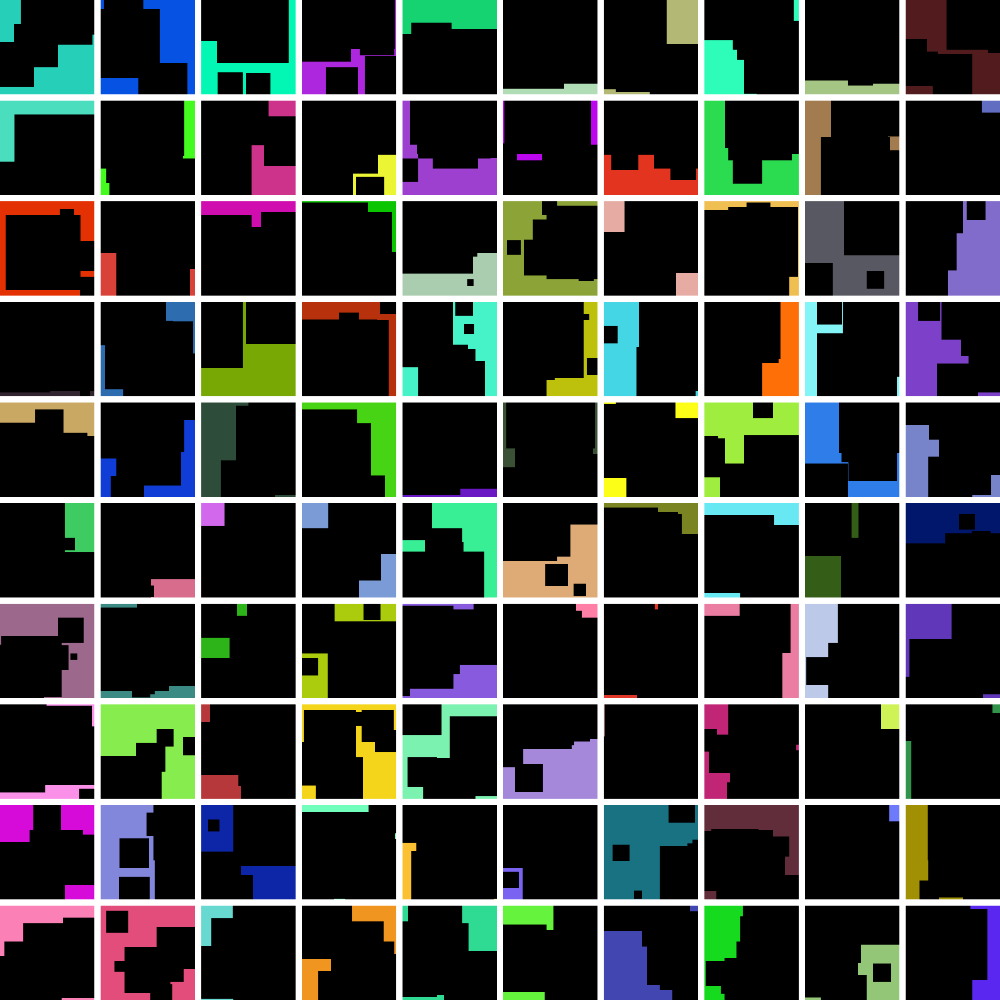

6 Black Squares
100 Generated Images
| Project name: | 6 Black Squares |
| Project start: | 2016-09-01 |
| Project end: | 2016-09-01 |
| Curator: | Ove Carlson |
| Computer program: | ArtGen |
| ArtGen Specification: | Ove Carlson |
The computer program ArtGen is used in many different ways regarding creation of abstract geometric images.
In this project ArtGen randomly places six randomly sized black squares on a randomly colored surface. The image is built up in one layer meaning that a black smaller square placed upon a larger black square is invisible.
In this way 100 images are created. From these images Ove Carlson selects one image that meets (or almost meets) his artistic demands. The selected image is shown on the project main page as well as a matrix containing the 100 randomly created images.
What is art? When does art become art? Who is an artist?
